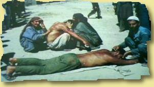

GFORCE Toture? Indian armed forces have let loose a reign of terror and are pursuing with the policy of unabated killings, torture and brutal methods of killings in Kashmir State since 1989. Despite the fact that international community and Human Rights Organizations all over the World have registered constant protests against this policy of Indian Government in Kashmir, no change is visible in the acts of repressions and suppression at the hands of forces. In fact the death due to torture and in custody have alarmingly increased. Many such incidents go un-noticed due to severe restrictions on the movement of people, constant crackdowns, curfews and other repressive measures by the forces. However, the Forum has been able to collect details about some such incidents which are based on personal information, print and electronic media and data collected by Human Rights activists. The officials and armed forces are in the habit of naming such killings as the result of so called encounters. But the fact of the situation is that most of such arrests are made during crackdown operations where people of the area are collected first, bodily searched before their entry in the specified area and then subjected to identification. The arrests of the people are made when such persons are totally unarmed and there is no possibility of any encounter with the forces. Such fake encounters are carved out by the forces in order to save themselves from the wrath of international community and over all public resentment. The cases below highligh the extent of the problem.  Indian Domination In Progess. Greets to : PHC #flem XPERiENCE crew, Attrition.org, safemode.org Projectgamma.com, hackernews.com, packetstorm.securify.org, self-evident.com, rest of #!GFORCE and Freedom fighters of Kashmir (the mujhaideens), safemode.org,.hexa labs.MAN|AC, Peacemaker, msgmen0t, aekpani, , DEATHaCES, DEADgH0sT, cen, RR, symetrixx, , root66, Sysop, justagirl dayzee ,blueberry ,apathy13, antipent, Jaguar ,BigPoppa, PoWerPr0, bo-k-rra, core, bs, live, none(leviatan), cruciphux, SugarKing espionage, defcon, melt, slader, lyp0x, xessor, max0r, wrLiner, DA^BOMB, #rootworrm, axess, hwa-security, !b0f, all peeps at flem, rsh, f0rpaxe, Ursel ,Earizer ,stella, divine, isn, c65.org, incubus, oreo and who ever we've missed Previous work | g-force@nightmail.com |